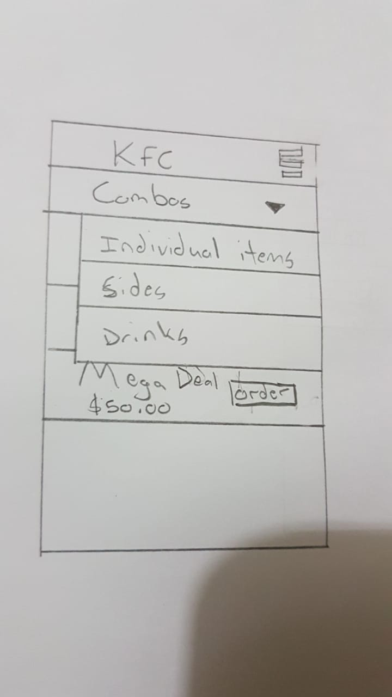

As a group we met and drew sketches, making comments on each others diagrams such as improvements for visual and functional designs. Paper prototypes were used for the sketches. Throughout this process ideas were generated around the major tasks of the users such as ordering a meal, customizing a meal, viewing and fulfilling pending orders and general login and sign up functionality. Thoughts on the process were based on how the user would interact with the system and their needs.
All of the sketches were arranged into three groups : ( Customer Screens, Food outlet Screens and General Screens)
This diagram can be seen here :
When a menu item is not available there will be a message within the item and it will also become unclickable to the customer user. This can happen due to a lack of stocks to prepare the oder which is indicated on the food outlet’s end of the system.
When the drop down toggle is clicked then the user can navigate to different sections of the menu to see what other options are available to order.
When a user selects a menu item they are taken to a screen where they can further customize their order by selecting the toggle to deselect ingredients of the meal that they do not want. If the meal has a choice of items say sides or type of meat etc they can select which one they want with the drop down box. The number picker allows them to specify how many of this item they would like to have in this order. The favourite star allows them to save this customization for future orders to run more quickly. The special request button allows the user to type any special requests like “Extra pepper please”
When a food outlet user selects one of the pending orders from the pending orders list they will be taken to this screen where they can see the details of the meal that they need to prepare. They will see all the individual components/ingredients of the meal and any special requests made by the user. When the begin preparation button is clicked the text changes to complete order. Also when this button is clicked the user is no longer able to cancel their order.